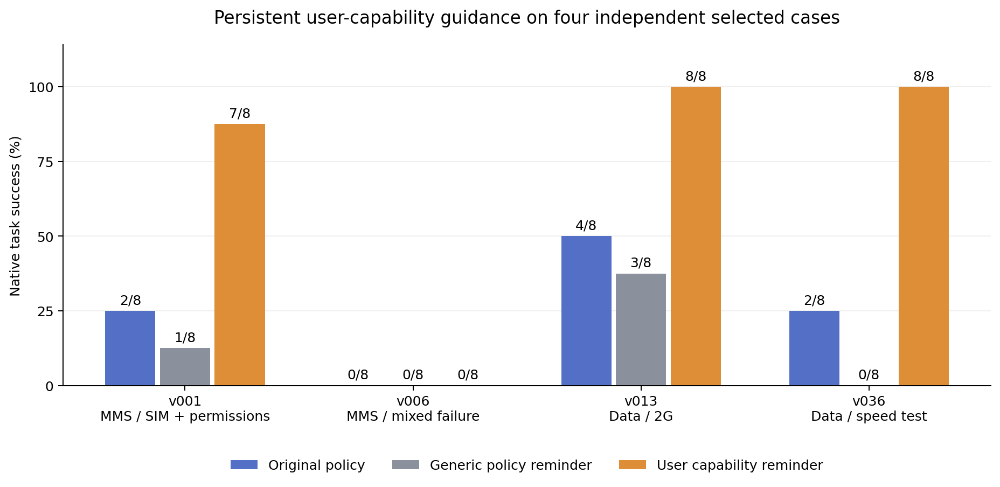

冻结 60 条新审阅轨迹：24 条旧关键词命中失败、24 条未命中失败、12 条成功对照。排除上批的 120 条轨迹和 7 个入选任务。随机预选 24 条接受第二模型审阅及编码助手候选裁决，其中 20 条原生失败、4 条原生成功。模型审阅隐藏 reward、分层信息、任务答案与用户工具结果。编码助手裁决已接触结果和模型意见，不能当人工盲审。
| 筛子 | 命中中 C 候选 | 未命中中 C 候选 | 加权 C 候选漏检比例 |
|---|---|---|---|
| old_ability_screen | 8/10 | 5/10 | 17.9% |
| revised_capability_screen | 13/15 | 0/5 | 0.0% |
加权仅对应排除旧数据后的残余 iid 失败池。新能力关键词筛子由本批错误启发，属于开发集拟合，不能把本批读数当独立验证；重复任务和小样本也限制推断。A/B 未因结构检查或模型意见直接升级为已验证模式。拒绝证书表示未解决，不表示无机制。
24 条编码助手参考里出现 1 条原生成功但存在 C 候选过程的轨迹。说明过程候选与 benchmark 最终 reward 必须分别记录，不能将它自动计入经验证的失败。
| 条件 | 完成/计划 | 成功数 | 成功率 |
|---|---|---|---|
| resample | 32/32 | 8 | 25.0% |
| generic_policy | 32/32 | 4 | 12.5% |
| capability_policy | 32/32 | 23 | 71.9% |

下载 PDF 图resample 使用原 policy；generic_policy 持续强调按 policy 排查；capability_policy 持续强调可指导用户执行已有设备操作。两种提醒相近长度、同样强调排查与检查结果，只改变 agent policy，用户 policy 不变；不提供隐藏状态、工具或任务答案。四个任务与上批任务不重叠，前缀状态一致。此比较检验持续委托提示的相对价值，尚不能排除所有提示显著性与 policy 理解解释。
v006 的失败是混合过程：最终 evaluator 显示仍未满足数据加购条件，不能把这一项单方排查缺失直接归给设备操作委托。已有权限修复并不保证全部任务条件成立。该任务保留在统计里，不因结果为零而事后删除；详见逐续写机制表。
旧 No-User 数据提供补充背景：v001、v013、v036 各成功 4/4，v006 为 0/4。这与 v006 存在其他困难的观察一致，但 No-User 同时改变信息、工具与 policy，不能作为因果隔离证据。详见 ability_context.json。
本批 API 已记录 7,403,315 tokens；10 个请求 usage 未知。保留接口恢复的全部尝试，旧源轨迹的生成成本不计入新 API 数字；不是完整账单，也不是发现效率比较。
G1 尚未通过：当前没有人工参考、经验证失败的完整确认成本，也未完成全部竞争解释对照。G2 未测试。后续应冻结新版筛子，在独立样本验证，并针对实际委托错误审查 simulator 执行与 policy 理解；再冻结发现单位与预算曲线。
分析 JSON · 24 条裁决与筛子 · 裁决依据 · 逐案例续跑 · 续写过程及未满足条件 · 冻结协议 · 证书规则修订 · 独立人工标注页